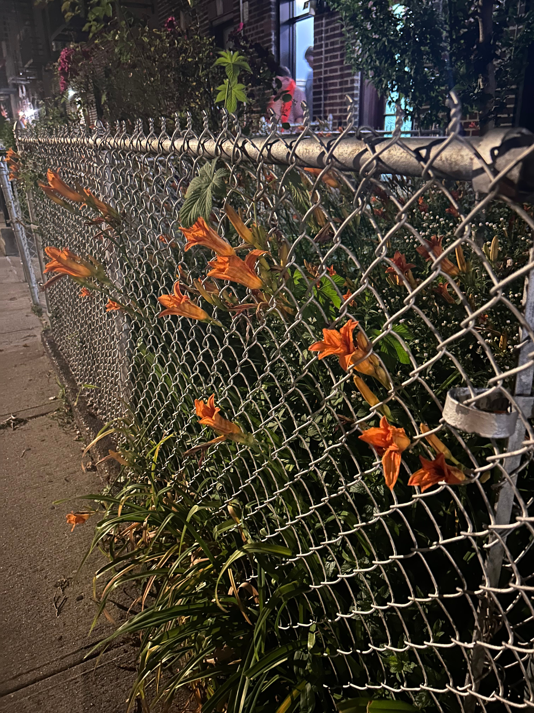
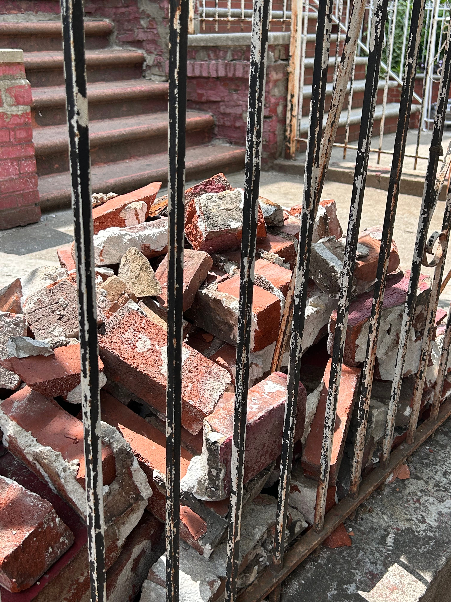
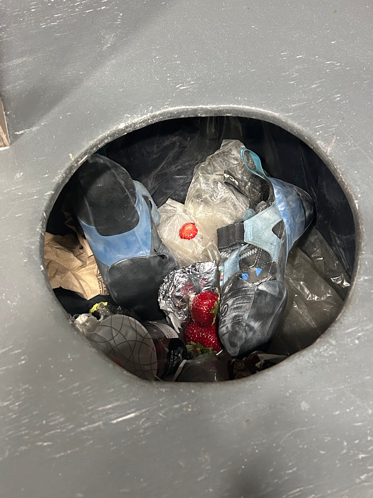

*<:o)
Seaweed, it is 9pm; this is the end of this letter; I have a few upcoming projects in mind, like serializing a story(!), but my history with projects is so shite that… who knows. In the end the end is the end; all I have left are a few links below.
A song I like these days
An essay about useless language that I sort of enjoyed
A list of books that you should consider buying/borrowing because I am trying to PURGE. If you are interested in buying any of the no’s, maybe’s, or maybe even the yes’s (which can also be borrowed) (for $1-5), let me know.
Ok bye. I hope that you’ve been doing fun things.
We do find comfort in each other. We feel the heat emanate from each other’s
skin and want to hide in it, taste each other until we’re dead. So I do forget that
I’m a surface and that you too are a surface. I ignore some of my thoughts so that I can conclude that I am wrong. We are lying on the floor, our heads resting on cushions, not looking at each other, our words forming ephemeral bridges in the air. We are a quiet grove of
trees. The couple of feet between us is equal to a thousand miles, but we look upon each other in peace and in irregular moments, the tips of our branches touch when the wind sifts through us.
It is easier to say I’m a surface when I’m writing, wrapping words around the thoughts that are forming a rope inside my mouth. But the other night, while I was walking around passing the familiar house-lined blocks and sidewalks strewn with leaves, a trash can at every other corner, I still thought you’re a surface, I’m a surface, you’re a surface, I’m a surface.
There are moments when I am sitting across from someone—an old friend, a person I’ve just met—and I wish I knew them better. As we stare at each other and describe our days, watch as our words slip into the topic of our childhood traumas, I have so many doubts. Their face is impenetrable. We blink to guard ourselves. Long, long ago, three paragraphs ago, I wrote that I felt vulnerable from eye contact, but I don’t think I would mind if someone knew the entirety of my mind. Yet, I withhold.
Sometimes, seeing other people’s surface break is frankly embarrassing; sometimes, I wish I wasn’t their witness. I once thought that leaves were leaves and I once thought that eye contact scared me because I preferred to not see another person see me. Ignorance (of eye contact) is bliss. But I think I am also scared of what I will see. The pupil is a cave. Caves are scary because you don’t know what could be inside them. I just want to 保全 their 面子… even though their 面子 is safe. My vision is too sorely human and myopic to see anything in someone’s eyes. Never fear, friend. I will only ever see your surface.
In Korean, we say 안면(顔面)을 트다, to break open one’s face, when we form an acquaintance with someone. So if I was to explain my relationship to the barista at the café around the corner to where I live, I would say, “we’ve broken face.” Yet, we also say we are saving face, or 체면을 지키다 in Korean, or 保全面子 in Chinese, to describe the act of protecting our dignity.
Life is so hard. Every day, we must break face and maintain face.
I like seeing emotions leak over people’s faces. When you’re riding the train and see someone suddenly smile at the air in front of them; when you’re lying in bed at night and remember that five years ago, you said the most horrifically cringey thing in reply to an acquaintance you met at a party, and it’s not a big deal but you realize your face is wincing; when you are walking around st. marks and see someone’s face suddenly crumple, their right hand forming a fist beside their thigh. Emotional leakage feels like an error because they are inadvertent. We prefer intentionality over loss of control. But I wonder if these moments of leakage are pure expressions of what lies underneath. A moment when the surface breaks.
I live for surface breakage. (I’m exaggerating.)
The whale is holding Jonah inside his stomach, but the whale has no idea Jonah is inside him.
I don’t fully know what is inside me, but I do have some control over my surface. The appearance of my face at any given moment depends on how tired I am, how much I like you, where I am. Sometimes, my face is soft and sweet; in these moments, I would do anything for you. Sometimes, my face, it is so callously dense that I feel sorry. Usually, I can tell when my surface doesn’t match what’s underneath. But not always.
I am a network of my likes and dislikes, my memories and my anxieties. I know there is something underneath them all, pulling them together, but even I am uncertain of what that is. I will understand myself better as I age; I have and always will comprehend myself better than I will comprehend anyone else. I will never fully know myself though, know myself to the point where I could predict every second of my behavior. Thinking that I can’t know everything about my life as I am living it, analyze every single thought or feeling I have to a stable degree of accuracy, is a strange thought to think. Last week, I graphed the keys of my favorite songs and learned I have a preference for songs in minor keys. I don’t know why. And I do wonder why in my interactions with people, I have annoying tendencies that I have learned to rein back over the years, but time and time again, these tendencies rise to the surface. I will continue to mystify myself.
Don’t judge a book by its cover
This is a proverb.
A saying qualifies as a proverb by being widely applicable; a wise piece of advice.
This proverb works nicely with books.
Example #1: Some of my favorite books have the ugliest covers.
Example #2: I tend to choose Korean books by their cover. This strategy has had poor results.
What is convenient about books is that you can open and read them from beginning to end.
This proverb may actually be most applicable to books. With non-books, you may find that you have no other choice but to judge based on the cover.
Example: You cannot open people and read them from beginning to end.
Because I am a lovable iceberg and I believe everyone else is too, I hate dating apps. No, I mean I think dating apps are kind of fun, fun in a terrible kind of way. The turmoil that some (I) experience with dating apps seems to be the ceaseless questioning of what three prompts and five images could convey one’s personage to another. Pain! To enjoy dating apps, you (I) have to recognize that that isn’t the point of dating apps and also, that you could ask the same question about reality. What does your surface need to look like to convey who you are underneath? We may make three-dimensional figures in the real, non-virtual side of the world, but that doesn’t mitigate the fact that we can only ever see each other’s surface. We are icebergs floating alongside each other; we cannot peek beneath the waves. Conversation with each other and time together may chip away at the ice, it may even seem more pliable, but we will still just be scratching one another’s surface. I thought of a new metaphor because when you and I are icebergs, there are at least two wrong implications. That it is our efforts to understand each other better that are deficient. That we are as solid and defined as icebergs. Instead, you and I are bottomless bags. A vessel that goes on forever and ever and ever and ever. When a bag has no bottom, you can never get closer to the center no matter how far you reach.
There is a cello leaning on you, clasped between your knees. Draw the bow across the string (use your right hand). Fail to put enough weight on the bow and the bow skids across the string instead of creating the necessary friction to vibrate it. The cello will still make a sound, but it will have what we call a “surfacey” tone. Like the moan of a croaking ghost. Dig into the string, scoop with your bow, avoid surfacey sounds, the reasonable listener advises.
Dear
seaweed,
You are a lovable
iceberg floating in the ocean. From above, you are digestible and smooth, a pretty dollop of ice. Below the waves, however, you could be anything, you are incomprehensible, massive and jagged. The surface is apparently a poor indicator of your full being.
Maybe because we are lovable
icebergs, we are critical of things that have no depth. When we describe a conversation, a relationship, or an essay as
“surface-level,” we are denigrating it for its uselessness.